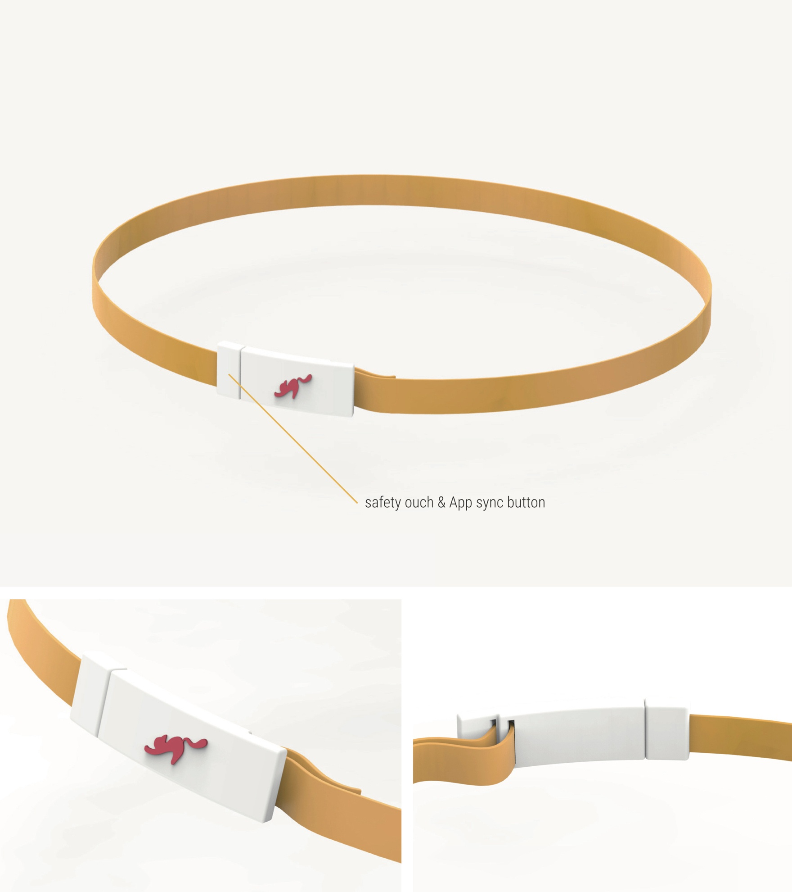
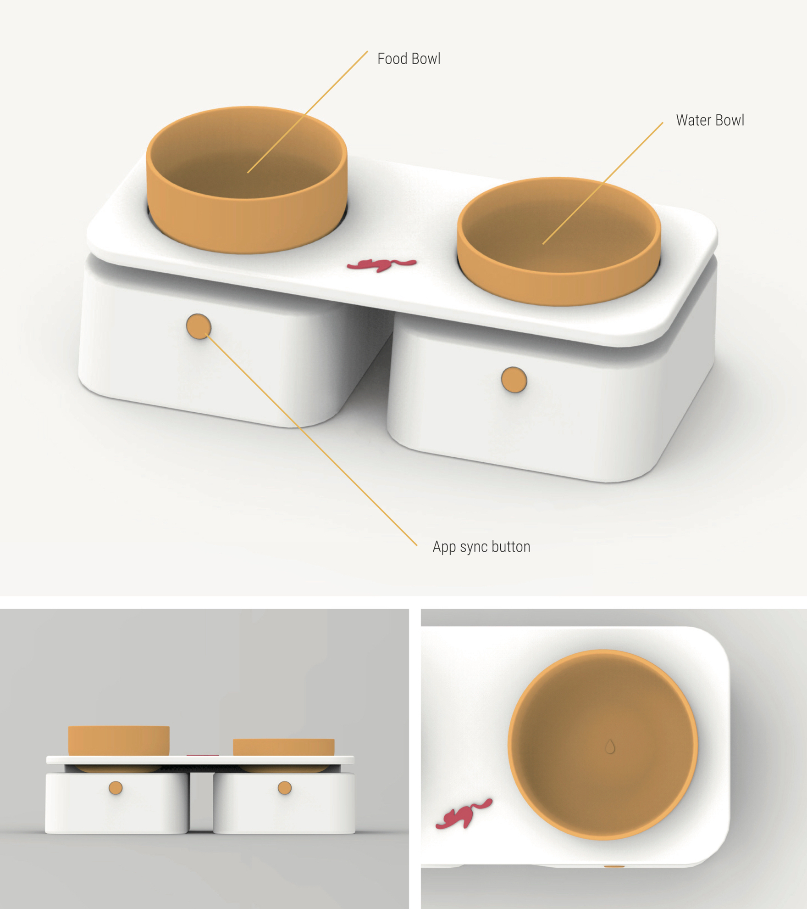
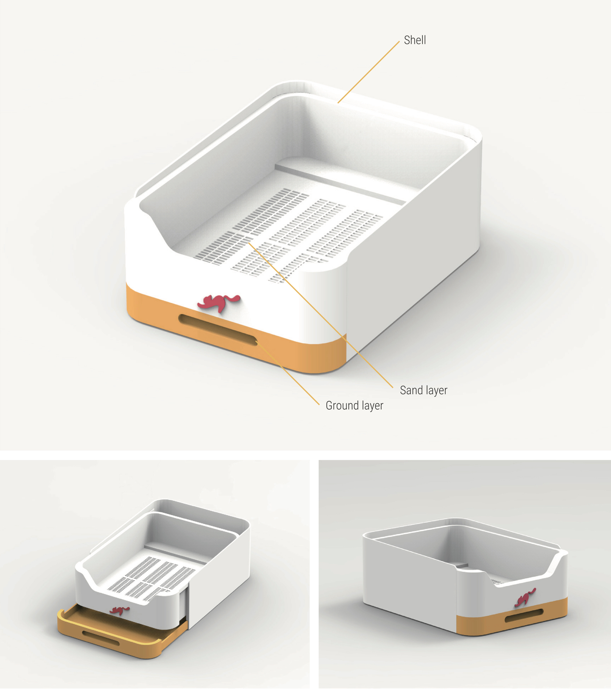
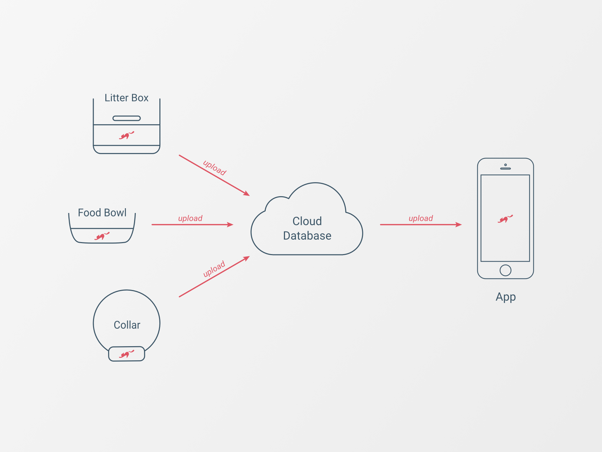
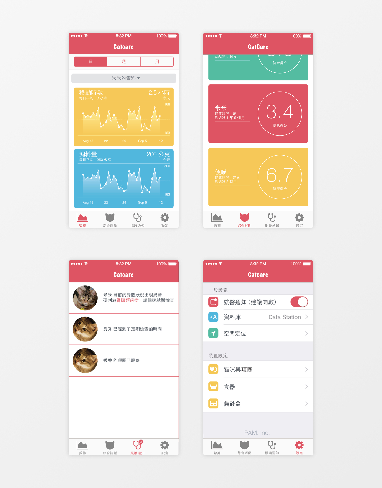
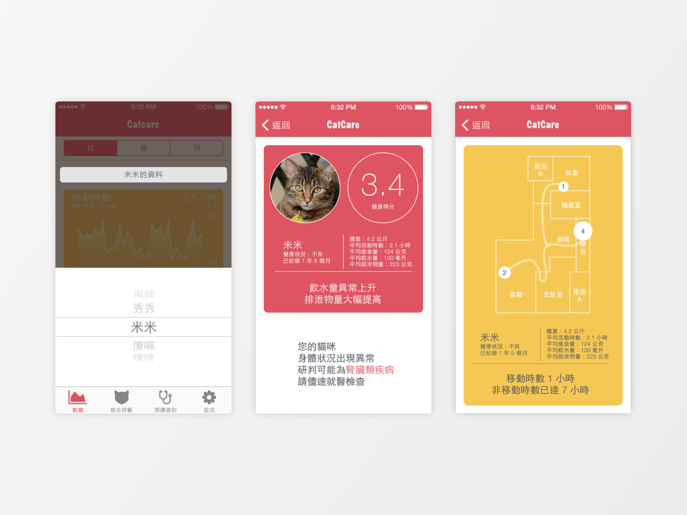

Design #004
Catcare
Design Partners ｜
Lu PingJung Hsu ChingTing
Catcare is a set of 3 products with IoT system and smartphone application, using to take care of cats.
The set of the 3 products - collar, food bowl and litter box - connects with the smartphone application to record parameters of cats, and bulid a database. Once the system record abnormal data from the average means the cat is sick.
# Catcare Collar
The collar records the route that cats have been through, daily exercise time, pulse and the sound frequency.

# Catcare Food Bowl
The food bowl records the diet amount and recognizes the data of different cats.

# Catare Litter Box
The halfed-coverd litter box is designed for cats needing more privacy. The layer filts the feces so the litter box record the data precisely.

# Catare Application
The app intergrates all the data of the 3 products above, and builds the cloud database. It will calculate the regular indexes and compare with the daily data. It will warn the keeper when detecting abnormal data.



Copyright © 2017 Du MengLin. All rights reserved.